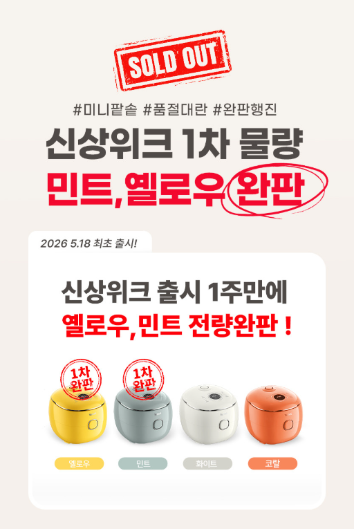
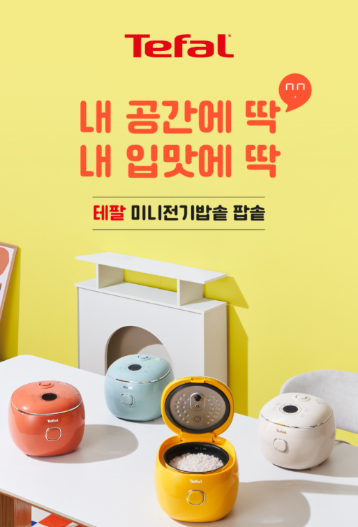

1. 테팔 미니밥솥 RK535는 어떤 제품일까?
테팔 미니밥솥 RK535는 많은 양의 밥을 한꺼번에 조리하기보다는 소량의 밥을 간편하게 준비하고 싶은 사용자에게 적합한 소형 전기밥솥입니다. 1인 가구나 2인 가구, 자취방처럼 주방 공간이 넓지 않은 환경에서도 활용하기 좋으며 밥뿐만 아니라 다양한 간편 조리에 사용할 수 있습니다. 구매 전에는 정확한 모델명과 용량, 조리 기능, 구성품과 세척 방법을 함께 확인하는 것이 좋습니다.
2. 미니밥솥의 활용성
미니밥솥은 필요한 만큼의 밥을 비교적 간편하게 준비할 수 있다는 점이 장점입니다. 대형 밥솥을 사용하기에는 조리량이 적거나 주방 공간이 제한적인 경우 소형 제품이 실용적인 선택이 될 수 있습니다. 특히 혼자 식사하는 경우나 매 끼니마다 새로 밥을 준비하는 사용 패턴이라면 제품의 크기와 조리량을 자신의 생활 방식에 맞춰 비교하는 것이 좋습니다.

3. 밥 조리와 사용 편의성
전기밥솥은 쌀을 씻은 뒤 정해진 물 높이에 맞춰 넣고 조리 기능을 선택하면 비교적 간편하게 밥을 준비할 수 있습니다. 미니밥솥을 사용할 때에는 제품의 권장 조리량을 지키는 것이 중요하며, 쌀의 종류와 양에 따라 필요한 물의 양이 달라질 수 있으므로 처음 사용할 때는 제품 설명서의 기준을 참고하는 것이 좋습니다.
4. 다양한 간편 조리에 활용
미니밥솥은 밥을 짓는 기본적인 용도 외에도 제품에서 지원하는 조리 기능에 따라 다양한 간편 요리에 활용할 수 있습니다. 죽이나 간단한 찜 요리처럼 냄비를 별도로 사용하기 번거로운 메뉴를 준비할 때도 활용할 수 있습니다. 다만 실제 지원 메뉴와 기능은 정확한 모델과 판매 구성에 따라 차이가 있을 수 있으므로 구매 전 제품 설명을 확인하는 것이 좋습니다.

5. 내솥과 부속품 관리
밥솥을 오래 사용하려면 내솥과 뚜껑, 증기 배출구 등 음식물과 수분이 닿는 부분을 깨끗하게 관리하는 것이 중요합니다. 사용 후에는 충분히 식힌 다음 내솥을 세척하고 물기가 남지 않도록 건조하는 것이 좋습니다. 코팅된 내솥은 표면이 손상될 수 있으므로 금속 수세미나 날카로운 도구를 사용하지 않는 것이 좋습니다.
6. 주방 공간과 보관
미니밥솥은 일반적인 대용량 밥솥보다 공간 부담을 줄이기 좋은 편이지만 실제 제품 크기는 구매 전에 확인하는 것이 좋습니다. 사용 중에는 증기와 열이 발생할 수 있으므로 벽이나 다른 가전제품에 지나치게 밀착하지 않고 충분한 공간을 확보해야 합니다. 사용하지 않을 때 보관할 장소까지 미리 확인하면 주방을 더욱 효율적으로 사용할 수 있습니다.
7. 구매 전 체크리스트
- 정확한 RK535 모델명과 제품 구성을 확인합니다.
- 가구원 수와 평소 밥을 먹는 양에 맞는 용량인지 확인합니다.
- 필요한 조리 기능이 포함되어 있는지 확인합니다.
- 내솥과 뚜껑 등 분리 세척 가능한 부품을 확인합니다.
- 제품의 크기와 주방 설치 공간을 확인합니다.
- 전원과 사용 환경에 적합한 제품인지 확인합니다.
- 배송, 교환, 반품과 보증 조건을 확인합니다.
싸게살래 가전·디지털 목록에서 다양한 제품 구매 가이드를 확인할 수 있습니다.
가전·디지털 전체 상품 보기 →자주 묻는 질문
테팔 미니밥솥 RK535는 어떤 사용자에게 적합한가요?
많은 양의 밥을 자주 조리하기보다는 필요한 만큼 간편하게 밥을 준비하고 싶은 1인 또는 소규모 가구에서 활용하기 좋은 제품입니다.
구매 전에 가장 먼저 확인할 것은 무엇인가요?
정확한 모델명과 용량, 지원하는 조리 기능, 구성품과 내솥 관리 방법을 먼저 확인하는 것이 좋습니다.
미니밥솥은 주방 공간을 많이 차지하나요?
대용량 밥솥보다 작은 제품을 선택할 수 있다는 장점이 있지만 실제 설치 공간은 제품의 가로, 세로, 높이를 확인한 뒤 결정하는 것이 좋습니다.
온라인 가격은 계속 같은가요?
판매자와 재고, 쿠폰 및 할인 혜택에 따라 가격이 달라질 수 있으므로 최종 결제 화면에서 실제 판매 조건을 확인해야 합니다.